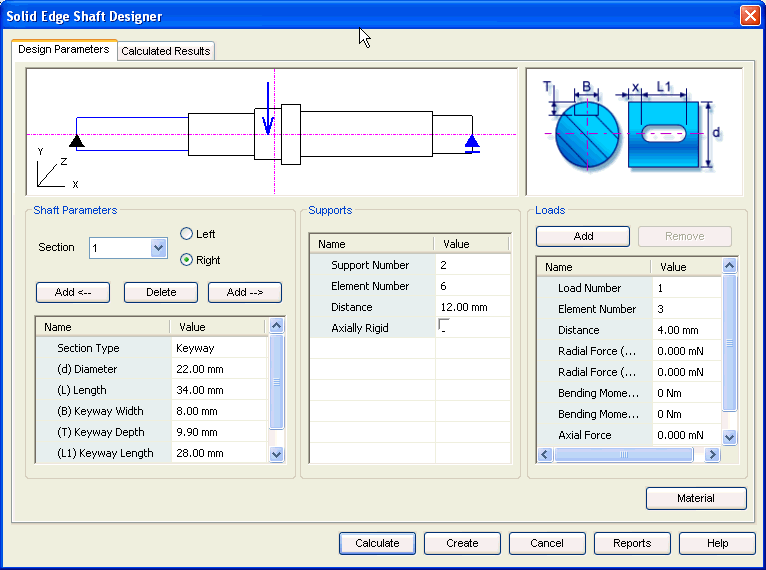

Design Parameters tab
The Design Parameters tab provides the options you use to enter details required for the design of the shaft. This tab consists of 6 areas.

- Graphic area 1
-
This area contains the graphical representation of the shaft layout. The area gives information on the number of sections, number of forces and number of supports for the current information provided.
- Graphic area 2
-
This area contains the graphical representation of section type and the parameters that define the size and shape of the section.
- Shaft parameters
-
Use this area to add and delete sections of the shaft layout. Define the parameters for each section like Diameter, Length using the options provided in this area
- Supports
-
Use this area to edit the location of supports on the shaft.
- Loads
-
Use this area to define number of forces, various components of each force and their location on the shaft.
- Material
-
Use the Material button to select the material of the shaft.